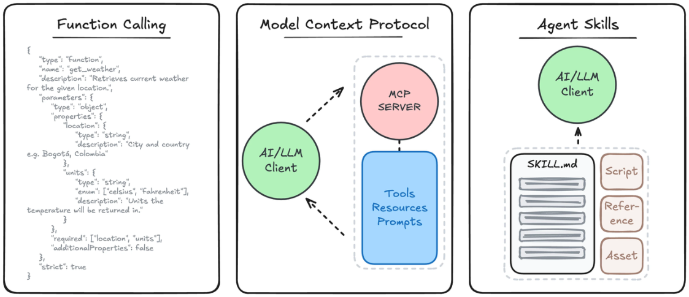
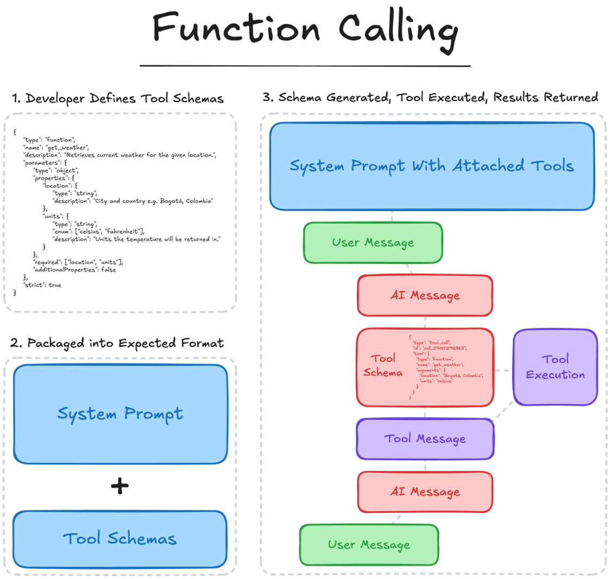
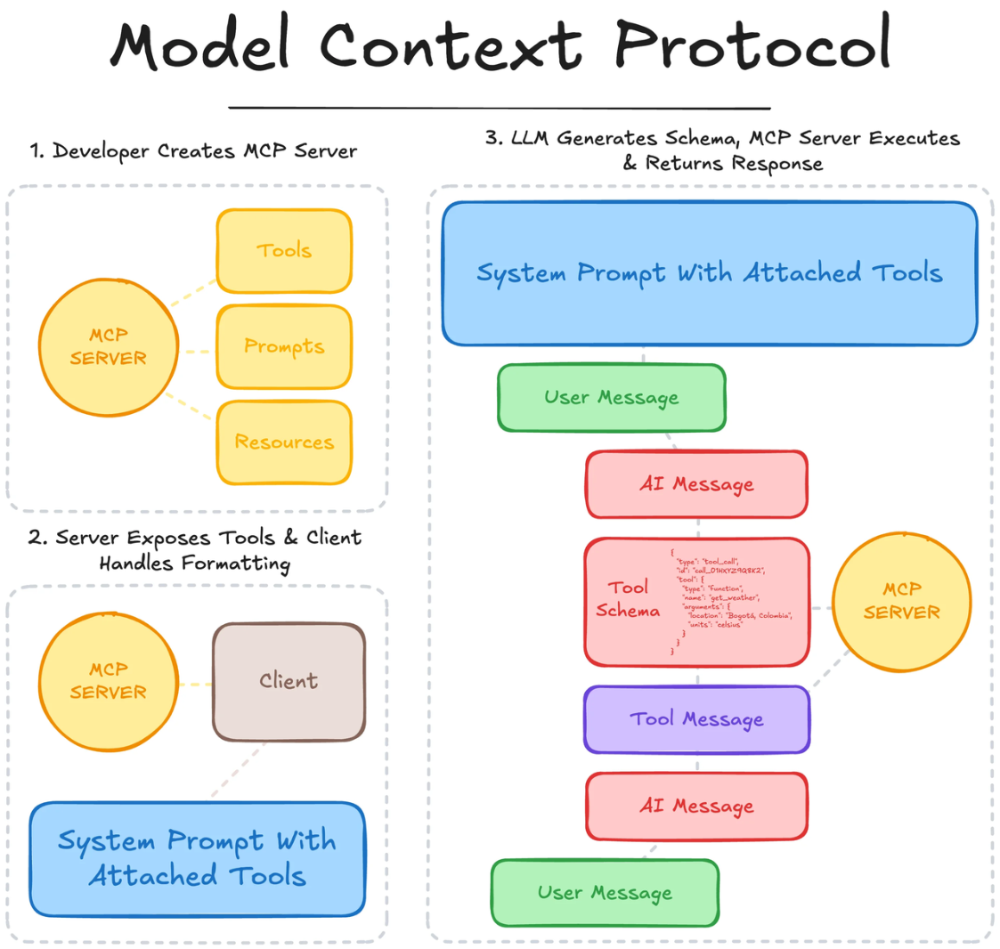
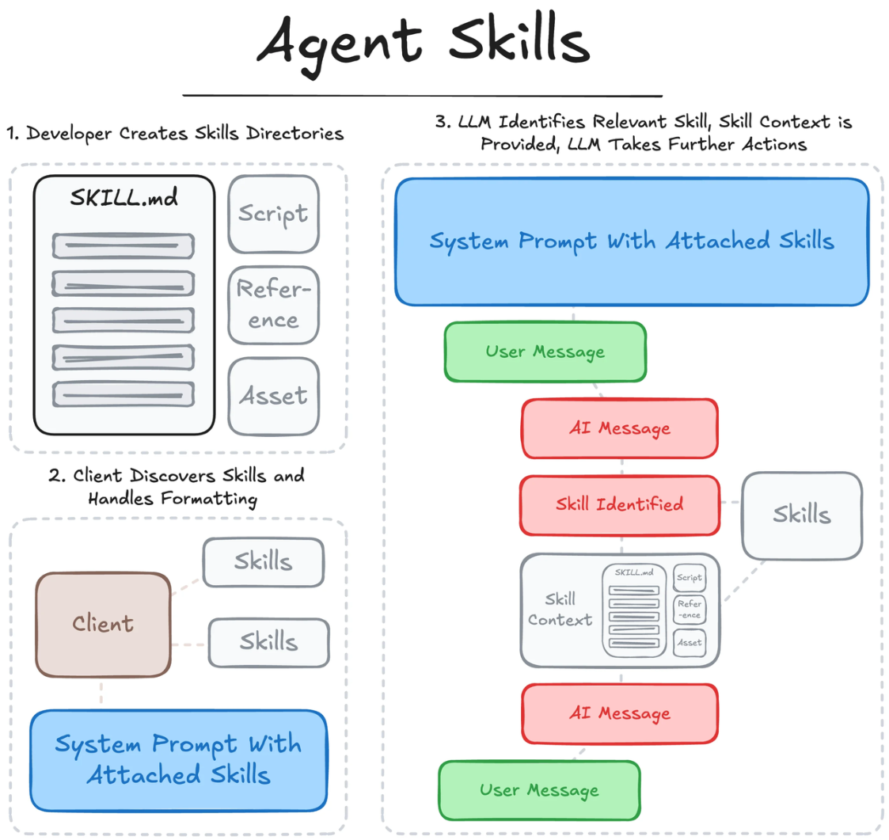

Skill vs Tool vs Function（深度解析）
问题背景
在构建 AI Agent 系统时，Skill、Tool 和 Function 是三个几乎一定会遇到的概念。但在实际使用中， 它们经常被混用，甚至被当成同一个东西来理解。

这种混淆的根本原因在于，这三者都与“能力调用”相关，但它们处在系统中的不同抽象层级。如果 没有清晰的分层认知，很容易在设计系统时出现结构混乱，例如：直接把 API 当作 Skill、或者把 Skill 写死在 Prompt 中。 因此，理解三者之间的关系，本质上是在建立一套清晰的 Agent 能力分层模型。 三者的本质定义
从抽象层级来看，这三个概念可以这样理解：
Skill 是能力的抽象，是对“要完成什么任务”的定义。例如，“查询天气”“发送邮件”“生成报 告”都属于 Skill。它描述的是一种业务能力，而不是具体实现。
Function 是能力的调用接口，是模型可以触发的一种结构化调用方式。它定义了函数名、参数结构以 及返回格式，是连接模型与执行逻辑之间的桥梁。
Tool 则是最终执行能力的实体，通常是外部系统或服务，例如一个天气 API、数据库查询接口，或者 一个搜索引擎。Tool 负责真正完成任务。
如果用一句话总结三者关系：
Skill 定义能力，Function 定义调用方式，Tool 负责执行结果。
Function Calling

函数调用的过程如下：
-
开发者定义外部工具或API的模式
-
关于模式的元数据（通常是通用和关键词特定描述）会连同任何应用特定指令一起传递给模型。
-
在推理过程中，LLM可以通过输出相应的工具调用模式、识别所选工具及关键词参数来选择“使 用”可用工具。
-
支持LLM的应用程序随后识别并解析该选择，调用指定工具并满足参数，并将结果以工具消息的形 式返回给LLM。
-
LLM随后利用这些上下文采取进一步行动或为后续生成提供信息。
MCP

模型上下文协议遵循以下流程：
-
开发者创建一个MCP服务器，定义工具的模式和执行逻辑（以及可选提示/资源），遵循MCP标 准。
-
支持客户端连接到MCP服务器，能够展示可用的工具及其模式，这些内容作为可用的操作传递给 LLM。
-
在推理过程中，LLM可以通过输出相应的工具调用模式、识别所选工具及关键词参数来选择“使 用”可用工具。
-
MCP客户端识别并解析该选择，将参数传递给执行工具并将结果返回客户端的MCP服务器。
-
MCP客户端将结果以工具消息的形式返回给LLM，LLM随后利用该上下文采取进一步操作或告知后 续生成。
Agent Skills

Agent Skills 遵循以下流程：
-
开发者创建一个包含主文件、支持资源、资源和脚本的 SKILL 仓库。
SKILL.md -
支持的文件系统代理客户端会发现可用的技能，并加载名称和描述元数据，这些数据随后作为可用 技能传递给LLM以供参考。
-
在推理过程中，LLM可以通过导航到对应的目录并加载主文件来选择引用可用技能。
-
内容注入LLM上下文后，LLM可以按照提供的指令操作，从资源中加载额外信息，或使用提供的工 具（无论是脚本执行、函数调用格式化，还是通过MCP服务器标准化）采取进一步操作或通知后续 生成。
所以我们可以看到，这些概念是互补的，并且有助于标准化或扩展工具使用和教学功能。在现实应用 中，这三个概念通常在最适合的地方一起使用。
从用户请求到执行的完整链路
为了更直观地理解三者的关系，可以从一个完整执行流程来看。
当用户提出请求，例如“帮我查一下北京今天的天气”，系统首先由语言模型理解意图。这一步并不 会直接调用 API，而是识别出用户需要的是“查询天气”这一类能力。 接下来，Agent 会在已有能力集合中选择对应的 Skill，即“查询天气”。此时仍然是一个抽象层的决 策。
然后，系统会根据这个 Skill 找到对应的 Function，例如 get_weather(city) ，并构造参数 { city: " 北京 " } 。此时进入了可执行层。 Function 被调用后，会进一步触发底层 Tool，例如调用某个天气服务 API，获取真实数据。Tool 返回 结果后，再由 Agent 整理并生成最终回复。
在这个过程中可以看到，三者是一个逐层下沉的关系，从抽象到执行逐步落地。
常见误区
在实际工程中，有几个非常典型的误区：
第一个误区是把 Tool 当作 Skill。例如直接把“调用天气 API”当作一个 Skill。这样做的问题是，能力 缺乏抽象，一旦 API 变更，就需要修改上层逻辑。
第二个误区是跳过 Function 层，直接在 Prompt 中描述调用逻辑。这种方式在简单 Demo 中可行，但 在复杂系统中会导致不可控的行为和低稳定性。 第三个误区是 Skill 粒度过大。例如把“处理客户问题”定义为一个 Skill，这样会导致能力不可复用， 也难以组合。
这些问题的本质，都是因为没有建立清晰的分层模型。
为什么必须分层设计
将 Skill、Function 和 Tool 分开设计，不仅仅是概念上的清晰，更是工程上的必要。 首先，分层可以提高系统的可维护性。Skill 层不关心具体实现，可以独立演进；Tool 层可以自由替 换，例如从一个 API 切换到另一个服务，而不会影响上层逻辑。 其次，分层可以增强系统的可扩展性。当新增能力时，只需要新增 Skill 和对应 Function，而不需要修 改已有 Agent。
此外，这种结构还天然支持多 Agent 和复杂任务编排。不同 Agent 可以共享 Skill，而 Skill 又可以调 用不同 Tool，从而形成灵活的能力网络。
在不同框架中的体现
在不同的 Agent 框架中，这三层结构有不同的体现方式。
例如在 LangChain 中，Tool 通常直接作为可调用单元存在，而 Skill 的概念相对隐式，需要开发者自 行抽象。在 OpenAI 的 Function Calling 或最新的能力体系中，Function 被明确标准化，而 Skill 则逐 渐演化为更高层的能力描述。
在 MCP（Model Context Protocol）中，这种分层会更加清晰，Tool 被标准化为可注册的服务，而 Skill 则可以作为上层调度逻辑存在。
虽然实现方式不同，但底层思想是一致的：将能力、调用和执行解耦。
如果从更宏观的角度来看，Skill 可以被视为 Agent 系统中的“能力操作系统”。 Tool 类似硬件或外部设备，Function 类似系统调用接口，而 Skill 则是对这些资源的组织与调度方 式。
当 Skill 体系足够完善时，Agent 不再只是调用单个工具，而是可以通过组合 Skill 来完成复杂任务，例 如多步骤推理、跨系统操作等。
这也是为什么在高级 Agent 系统中，会出现 Skill Registry、Skill Router、Skill Composition 等机 制，本质上是在构建一个完整的能力调度系统。
总结
Skill、Function 和 Tool 构成了 AI Agent 执行能力的三层结构，它们分别对应能力抽象、调用接口和 实际执行。
理解这三者的区别，不仅有助于避免概念混淆，更是构建可扩展、高稳定 Agent 系统的基础。 从实践角度来看，一个优秀的 Agent 系统，往往具备清晰的 Skill 抽象、规范的 Function 定义，以及 稳定可靠的 Tool 接入。这三者共同决定了系统的能力边界与上限。